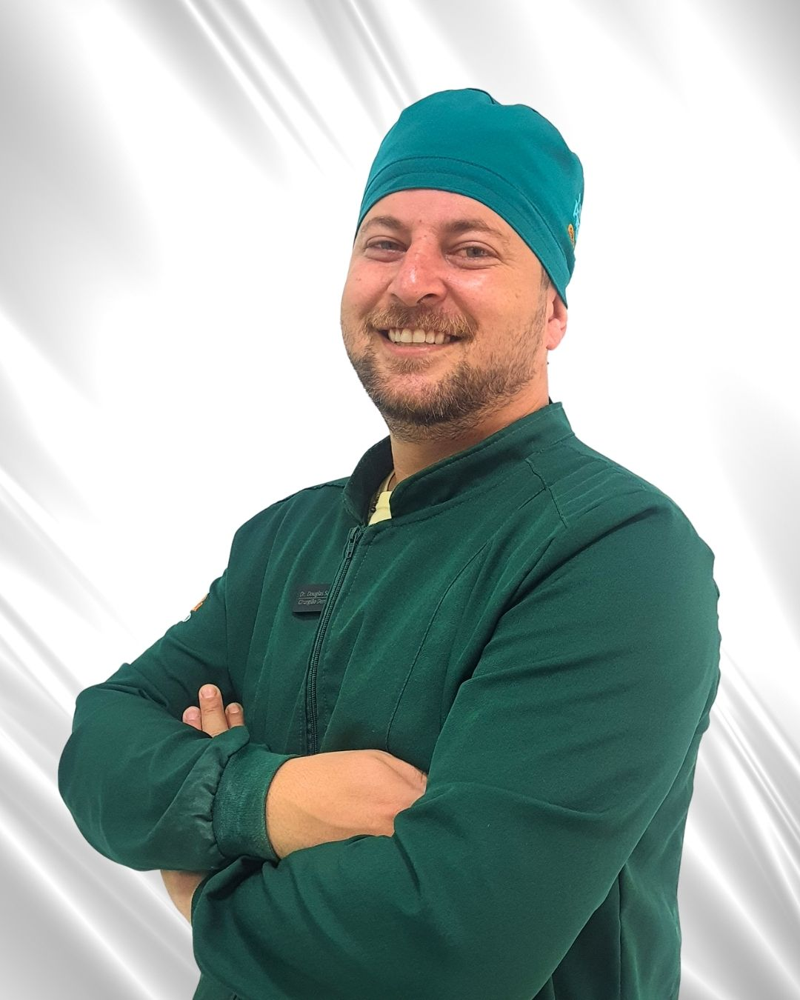
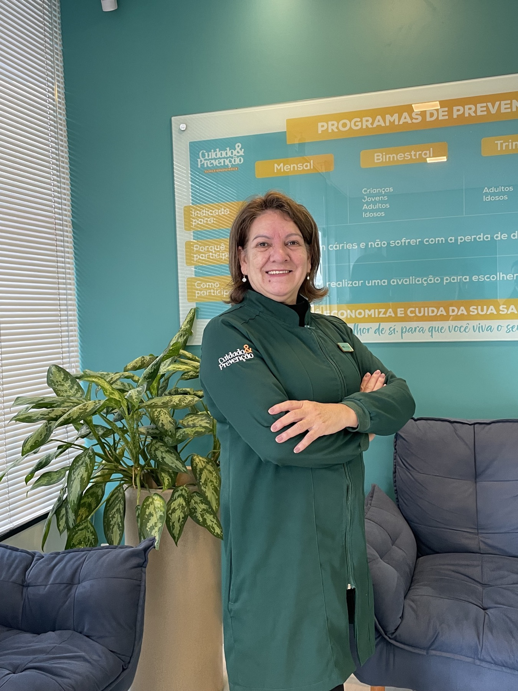
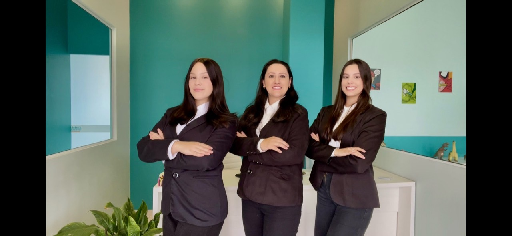
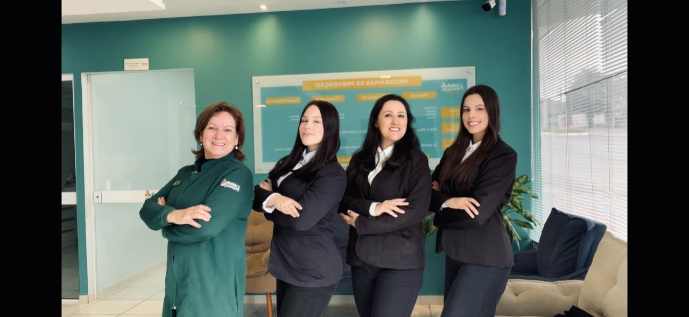
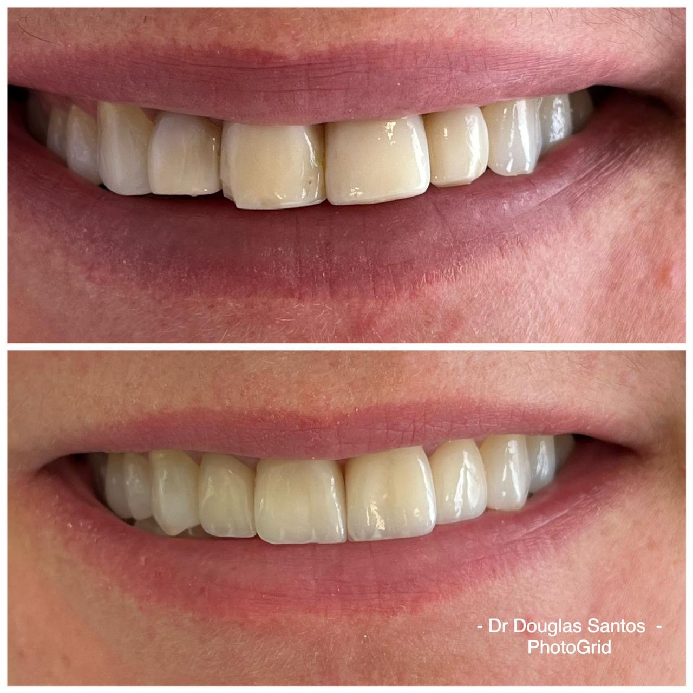
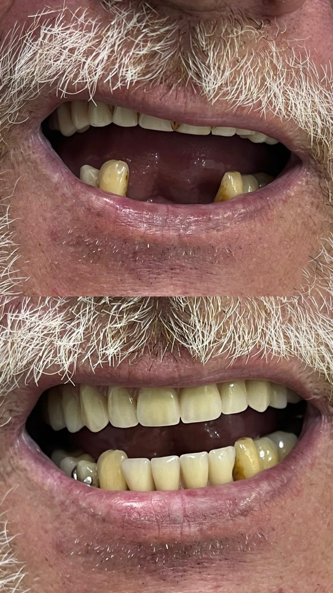
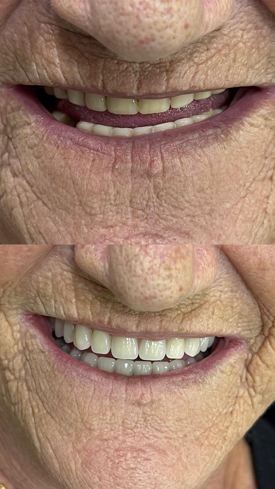
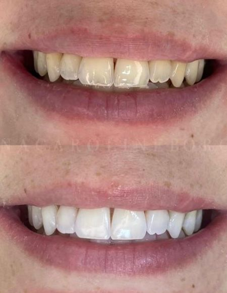

Clínica odontológica em São Mateus do Sul
Cuidado completo para o seu sorriso, com prevenção em primeiro lugar.
Atendimento odontológico humanizado para famílias, crianças, adultos e pacientes que buscam saúde bucal, estética e segurança em cada etapa do tratamento.

Atendimento preventivo
Diagnóstico, orientação e cuidado contínuo.
Quem somos nós
Uma clínica feita para cuidar de perto, orientar com clareza e prevenir antes de tratar.
A Cuidado & Prevenção nasceu com uma proposta simples: unir técnica, acolhimento e acompanhamento constante para que cada paciente entenda sua saúde bucal e se sinta seguro durante todo o processo.
Nosso atendimento valoriza o diagnóstico cuidadoso, a explicação dos caminhos possíveis e planos de tratamento pensados para a realidade de cada pessoa.
Conheça a nossa equipe
Profissionais preparados para receber você em cada etapa.

Cirurgião-dentista e gestor
Dr. Douglas
Responsável pela condução clínica e pelo cuidado com a experiência dos pacientes da Cuidado & Prevenção.

Equipe clínica
Profissional da equipe
Nome e função serão ajustados assim que os dados oficiais forem enviados.

Comercial e atendimento
Equipe de atendimento
Equipe responsável por recepção, acolhimento e agendamento dos pacientes.

Equipe Cuidado & Prevenção
Time da clínica
Registro provisório da equipe. Depois podemos separar nomes, cargos e descrições individuais.
Tratamentos e áreas atendidas
Odontologia para cuidar da saúde, função e estética do sorriso.
Prevenção e limpeza
Profilaxia, orientação de higiene, avaliação periódica e controle de placa.
Clínica geral
Restaurações, tratamento de cáries, dor dental e cuidados do dia a dia.
Estética dental
Clareamento, harmonização do sorriso e procedimentos estéticos conservadores.
Prótese e reabilitação
Planejamento para recuperar mastigação, conforto e segurança ao sorrir.
Implantes
Avaliação e planejamento para reposição de dentes perdidos.
Ortodontia
Alinhamento dental e acompanhamento para melhorar função e estética.
Endodontia
Tratamento de canal e controle de infecções internas do dente.
Odontopediatria
Cuidado preventivo e acolhedor para crianças e adolescentes.
Casos clínicos
Registros de tratamentos realizados na clínica.
Cada sorriso tem um planejamento individual. As imagens mostram evoluções reais, mas o resultado varia conforme a necessidade de cada paciente.




Avaliações no Google
Pacientes que confiaram na Cuidado & Prevenção.
Avaliações reais deixadas no Perfil da Empresa no Google por pacientes que passaram pela clínica em São Mateus do Sul.
Ver perfil no Google
M
Milena Padilha Engenharia Civil
4 meses atrás
★★★★★
"Profissionais incríveis, cuidaram muito bem de mim e de toda a minha família. Muito feliz com o resultado, super indicamos."
V
Vida & Saúde Priscila Orth
4 meses atrás
★★★★★
"Ótimo atendimento e qualidade dos procedimentos! Adorei!"
E
Elizangela Ciesla
3 meses atrás
★★★★★
"Eu recomendo. Ótimos profissionais, nota 10."
G
Gabrielle Colita Platz
2 anos atrás
★★★★★
"Ótimo atendimento! A equipe me recebeu super bem e amei o Dr. Douglas."
M
Maria Laura Ramos Padilha
3 meses atrás
★★★★★
"Ótimos profissionais."
A
Ariadne Padilha
4 meses atrás
★★★★★
"Excelente atendimento!"
Avaliação
O primeiro passo é entender o que o seu sorriso precisa agora.
Na avaliação, a equipe identifica prioridades, conversa sobre suas queixas e indica um plano de cuidado personalizado.
Localização
Estamos no Centro de São Mateus do Sul.
Av. Ozy Mendonça de Lima, 1405 - Centro, São Mateus do Sul - PR, 83900-000